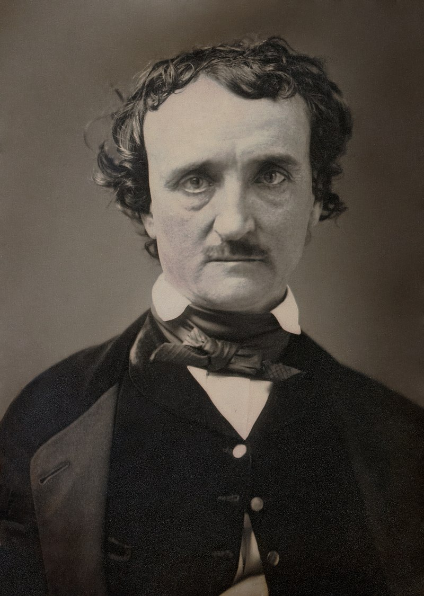
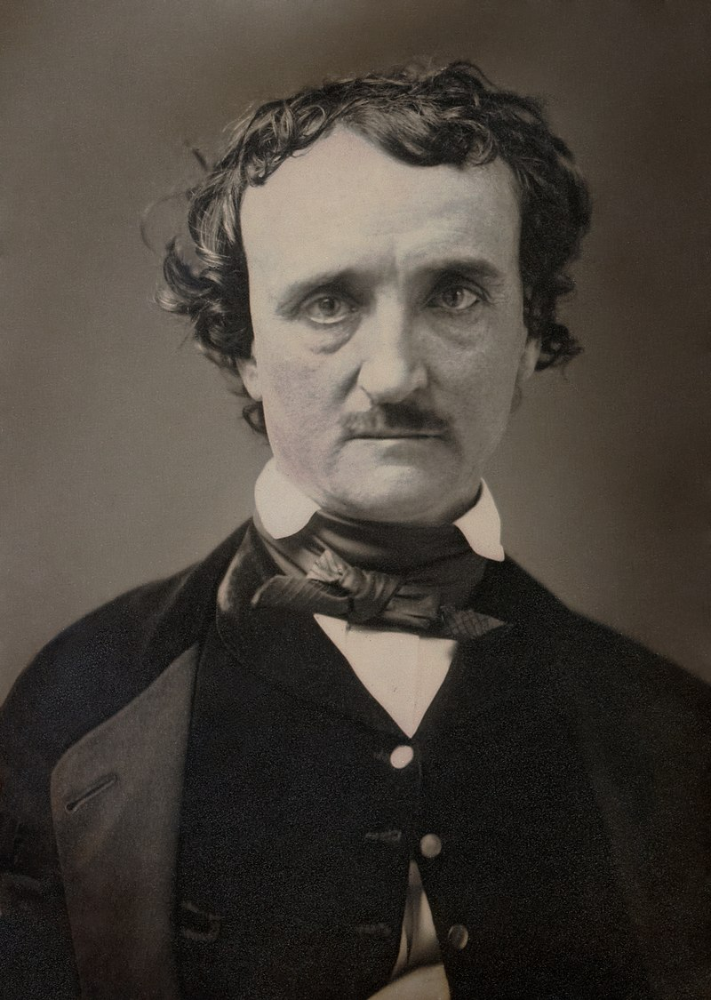

Immediately after Poe's death, his literary rival Rufus Wilmot Griswold wrote a slanted high-profile obituary under a pseudonym, filled with falsehoods that cast Poe as a lunatic, and which described him as a person who "walked the streets, in madness or melancholy, with lips moving in indistinct curses, or with eyes upturned in passionate prayers, (never for himself, for he felt, or professed to feel, that he was already damned)".[82] The long obituary appeared in the New York Tribune signed "Ludwig" on the day that Poe was buried. It was soon further published throughout the country. The piece began, "Edgar Allan Poe is dead. He died in Baltimore the day before yesterday. This announcement will startle many, but few will be grieved by it."[83] "Ludwig" was soon identified as Griswold, an editor, critic, and anthologist who had borne a grudge against Poe since 1842. Griswold somehow became Poe's literary executor and attempted to destroy his enemy's reputation after his death.[84] Griswold wrote a biographical article of Poe called "Memoir of the Author", which he included in an 1850 volume of the collected works. There he depicted Poe as a depraved, drunken, drug-addled madman and included Poe's letters as evidence.[84] Many of his claims were either lies or distortions; for example, it is seriously disputed that Poe was a drug addict.[85] Griswold's book was denounced by those who knew Poe well,[86] including John Neal, who published an article defending Poe and attacking Griswold as a "Rhadamanthus, who is not to be bilked of his fee, a thimble-full of newspaper notoriety".[87] Griswold's book nevertheless became a popularly accepted biographical source. This was in part because it was the only full biography available and was widely reprinted, and in part because readers thrilled at the thought of reading works by an "evil" man.[88] Letters that Griswold presented as proof were later revealed as forgeries.